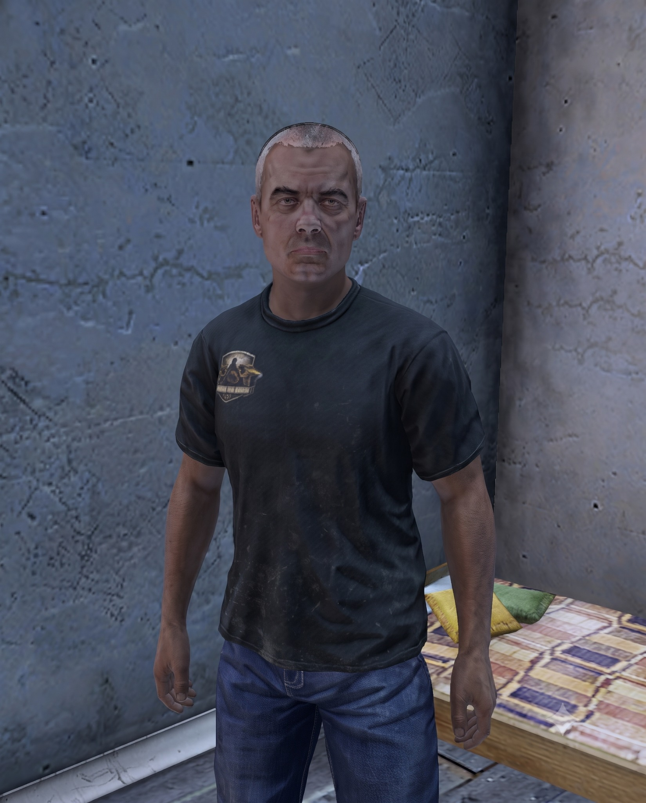

What Quinn Buys
- All gear
- All clothing
Scorched Isle Market's gear and clothing trader. Quinn buys all wearable gear and clothing, while the stock he sells is limited to vanilla items.
Quinn has little interest in where a piece of gear came from. Military surplus, scavenged jackets, battered packs, or pristine clothing pulled from some forgotten storeroom, it all has a place on his counter if another survivor might wear it.
Operating from Scorched Isle Market, he has become the mainland's clearinghouse for the clothes and equipment survivors drag home from their runs. He buys broadly, taking gear of every kind rather than forcing survivors to separate the ordinary from the unusual.
His own shelves are more restrained. Quinn only sells standard vanilla gear and clothing, keeping dependable everyday equipment available without turning his stall into a museum of every strange piece of kit circulating through Chernarus.
If it can be worn, carried, or strapped on, Quinn will probably take it off your hands.
